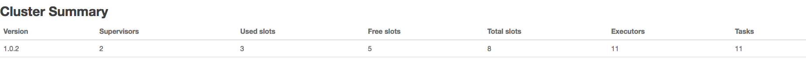
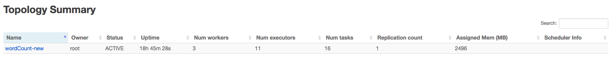

storm UI解析
@(Storm)[storm]
Cluster Summary

Topology代码设置
TopologyBuilder topologyBuilder = new TopologyBuilder();
//不设置task数量时，task数量=executors数量
topologyBuilder.setSpout("sentenceSpout", new RandomSentenceSpout(),2).setNumTasks(4);
topologyBuilder.setBolt("sentenceSplitBolt", new SplitSentenceBolt(),2).setNumTasks(3).shuffleGrouping("sentenceSpout");
topologyBuilder.setBolt("countBolt", new WordCountBolt(),4).setNumTasks(6).fieldsGrouping("sentenceSplitBolt", new Fields("word"));
Config conf = new Config();
conf.setDebug(true);
if(args != null && args.length > 0){
conf.setNumWorkers(3);
StormSubmitter.submitTopology(args[0], conf, topologyBuilder.createTopology());
}else{
conf.setMaxTaskParallelism(10);
LocalCluster localCluster = new LocalCluster();
localCluster.submitTopology("word-count", conf, topologyBuilder.createTopology());
Thread.sleep(10000);
localCluster.shutdown();
}
}
UI界面

Num workers = 3 > 通过conf.setNumWorkers(3);进行设置
Num executors = 11
topologyBuilder.setSpout("sentenceSpout", new RandomSentenceSpout(),2).setNumTasks(4); topologyBuilder.setBolt("sentenceSplitBolt", new SplitSentenceBolt(),2).setNumTasks(3).shuffleGrouping("sentenceSpout"); topologyBuilder.setBolt("countBolt", new WordCountBolt(),4).setNumTasks(6).fieldsGrouping("sentenceSplitBolt", new Fields("word"));
sentenceSpout 并发度是2 sentenceSplitBolt 并发度2 countBolt 并发度4 另外每一个worker都会启动一个executor，用来执行acker任务，上面设置有3个worker 2+2+4+3=11
- Num tasks = 16 task数量可以通过设置spout和bolt的numTasks数量来设置，不设置时，缺省一个executor会生成一个task,executor数量<=task数量，在这里这是task数量，主要是为了后续rebalance来用的 sentenceSpout 任务数是2 sentenceSplitBolt 任务数2 countBolt 任务数4 另外每一个worker会生成acker任务，本例中有个3个worker 2+2+4+3=11